Vision Starter Project
| Short description | Required knowledge level | Estimated duration | Additional hardware and software requirements |
|---|---|---|---|
| Get started with first image acquisition settings and an easy AI Classification and Anomaly Detection task. | Basic | 20 Minutes | none – everything included in the Starter Kit |
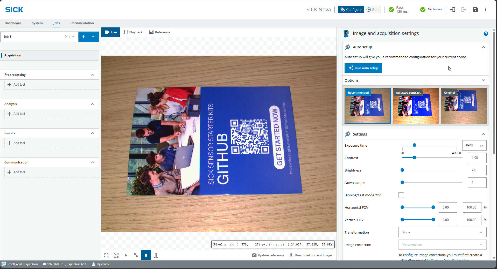
Instructions
Image acquisition
- Set up the Inspector as described in Getting started.
- Select Live on top and press the Play button at the bottom to take images continuously.
- Place the GitHub info card in the camera's field of view
- Select Jobs > Acquisition and play around with the Settings to get a well-lit image. Alternatively, press Run auto setup directly.
- If necessary, adjust the focus of the camera manually using the focus adjustment tool
AI Classification
- Choose Analysis > Add tool > Classify > AI Classification (without dStudio)
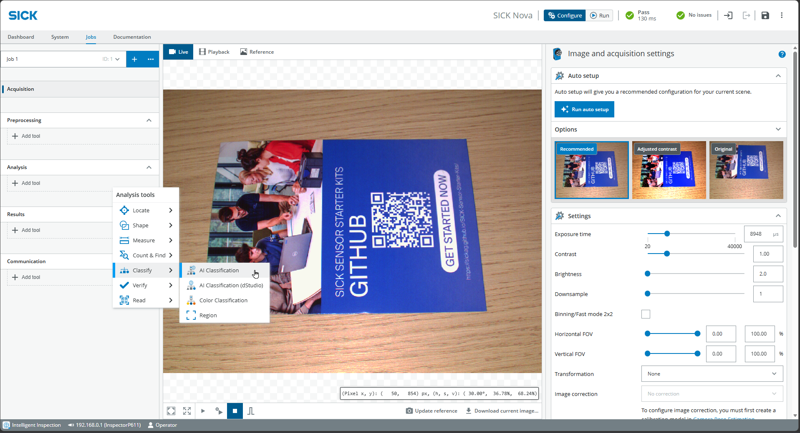
- Adjust the size of the box, so that it encompasses the entire object plus a buffer to account for variations or different positions.
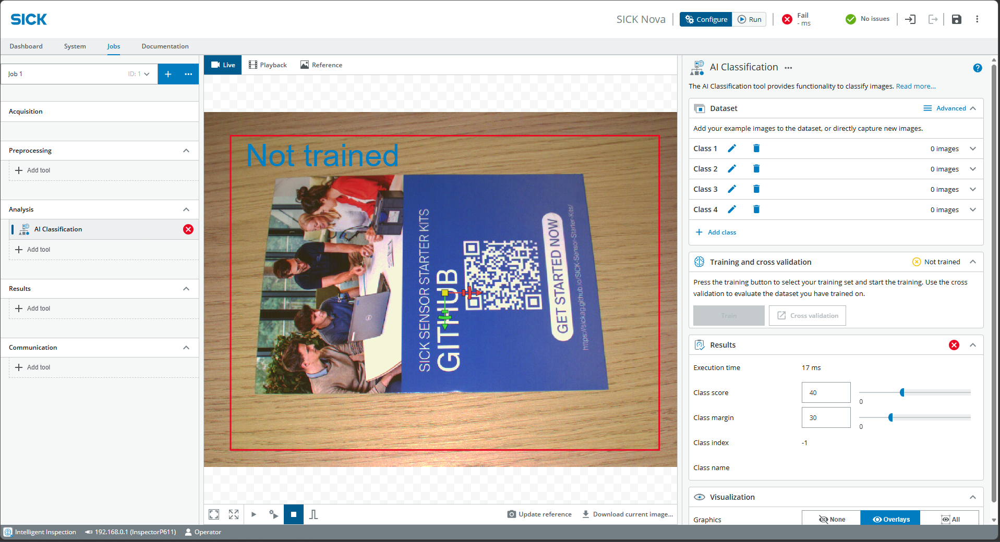
- Create classes under Dataset on the right
- Click the play icon at the bottom center to take continuous photos
- Expand the first class and capture images using Add active image
- Try out different variations (position / rotation)
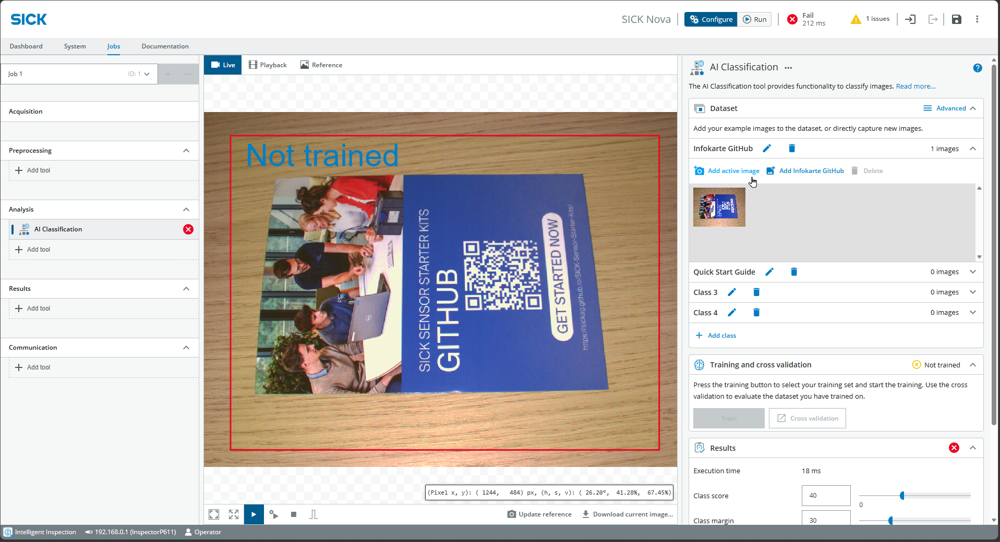
- Repeat for the second class, take at least 5 images each and click on Train
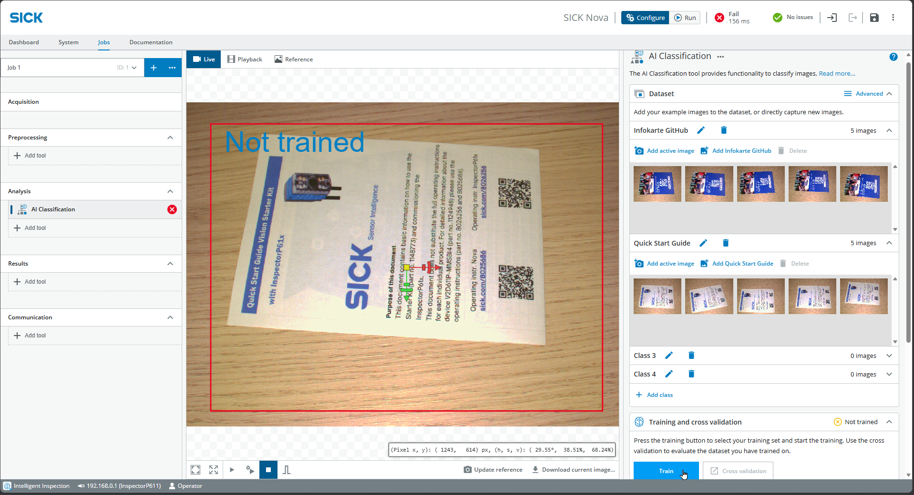
- After a few seconds, the training is finished an you can test the results.
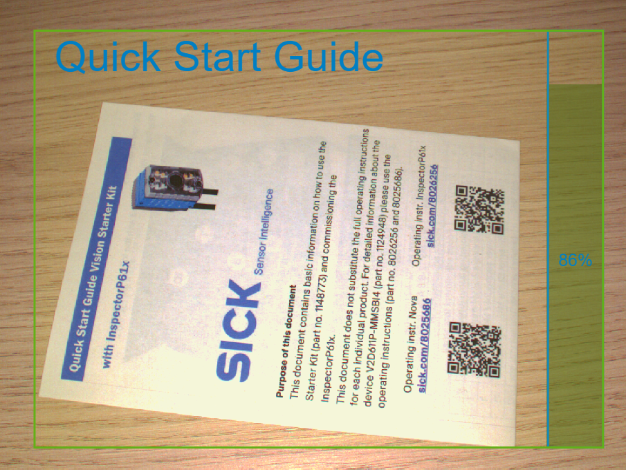
- If useful, add more images or include additional classes (e.g., "Empty") to optimize the results
Object Locator
The Object Locator is designed to detect the position of an object and perform analyses relative to that position (e.g., detect anomalies).
- On the left, choose Jobs > Analysis > Add tool > Locate > Object Locator
- Place an object in the image
- At the bottom center, click Update reference and jump to the Reference tab
- Drag the box over a distinctive part of the object
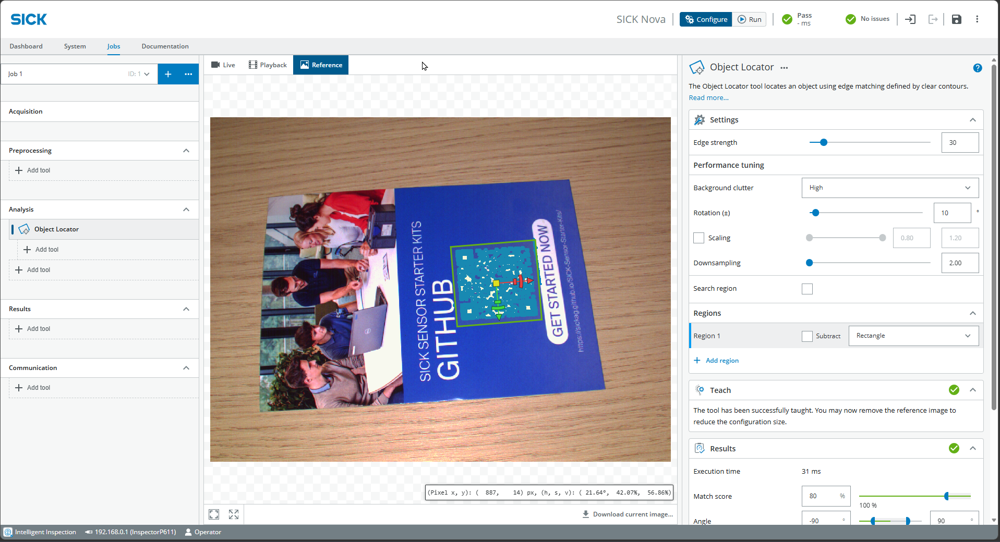
- If necessary, adjust the parameters on the right:
- Edge strength for contrast edges
- Rotation for possible rotation of the object
- Scaling, Match score and Angle for sensitivity
- Click Live and Play at the center to test whether the part of the object is being tracked when the object is moved
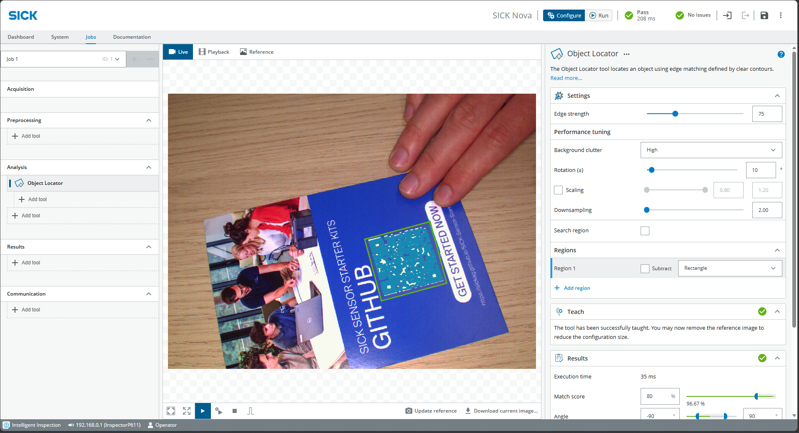
Important: The Object Locator must work reliably before any other tools are used. Add any additional tools directly below the Object Locator.
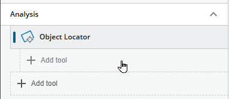
*** Anomaly Detection
- On the left, choose Jobs > Analysis > Add tool > Verify > AI Anomaly Detection (if necessary, below Object Locator)
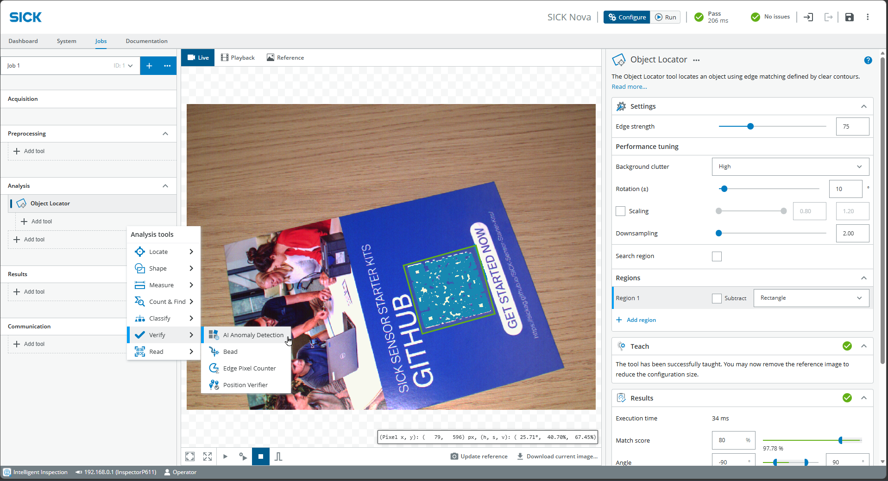
- At the top center, select the Reference tab and drag a box over the object (make it only slightly larger, since the Object Locator is tracked along with it)
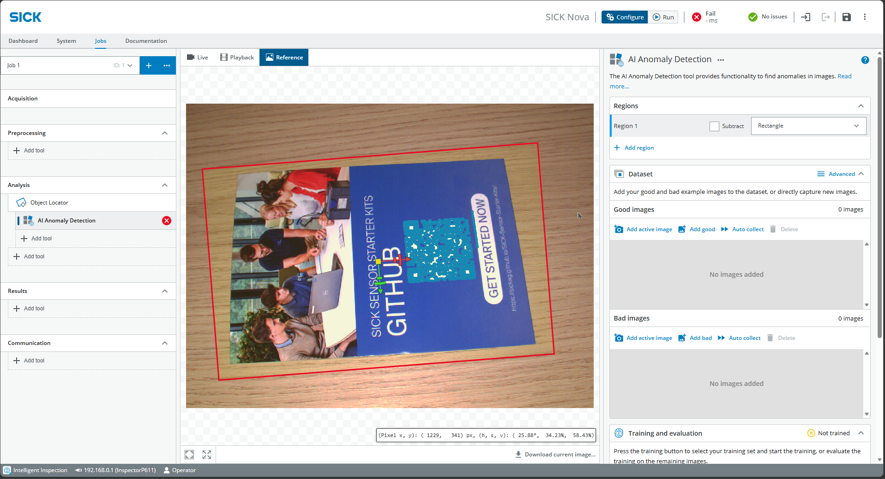
- Go back to Live and Play and find Dataset at the bottom right. Add Good images with various variations. Start with just a few Good images for now.
- Click Train
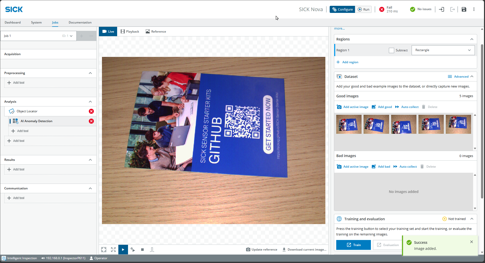
- Adjust training parameters if necessary
- Number of training images (the rest is for evaluation)
- Fast vs. precise depending on the number of images and time
- Keep strict matching active if object variation is very low / only one object
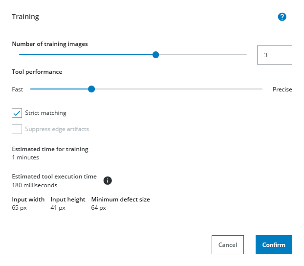
- Set to Live and Play and test
- Note: Anomaly Detection always depends on the Object Locator. If it fails, Anomaly Detection will also fail At the bottom right under Results, adjust Anomaly Score and Visualization range if necessary
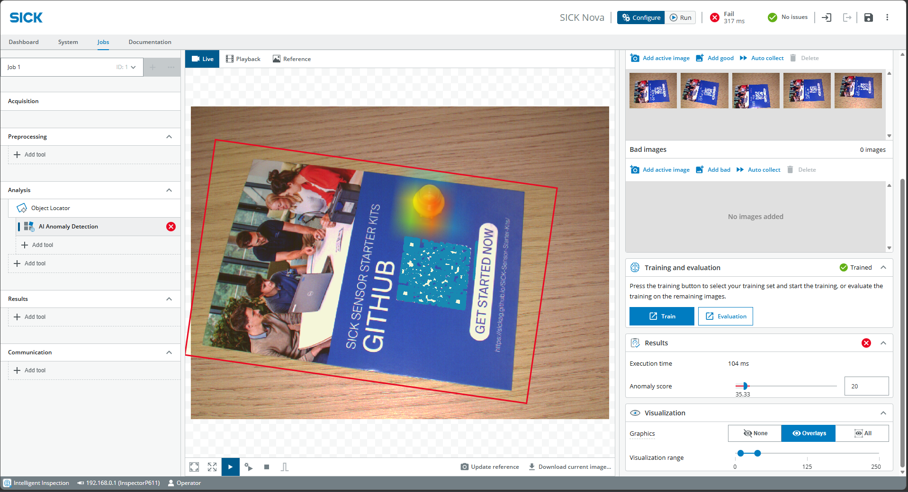
If necessary, capture additional images and also add Bad images to optimize results
Reset
At the op right, click on the 3 dots > Application defaults
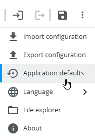